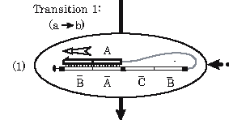
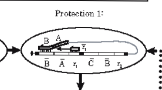

DAM Le Thanh Tung - 12418143
Whiplash PCR based methods of biomolecular computation (BMC) are well-known to suffer from a simple form of self-poisoning known as back-hybridization. However, an optimally re-engineered WPCR-based architechture, Displacement Whiplash PCR (DWPCR) has been proposed and experimentally validated. In addition to attaining a near-ideal efficiency, DWPCR's ability to support isothermal operation near room temperatures eliminates the need for thermal cycling, and opens the door for biological applications.
Hairpin Computing
 In Whiplash PCR (WPCR), autonomous molecular computation is implement by the recursive, self-directed polymerase extension of a DNA hairpin mixture. When combined with a method for generating a combinational library of encoded strands, WPCR is theoratically capable of solving instances of a variety of NP-complete problems, and of supporting evolutionary computation. Unfortunately, this is prevented by back-hybridization (see sidebar.)
Rule-Protect
 In DWPCR, back-hybridization is completely eliminated by the Rule-Protect biostep, which replaces thermal cycling with strand displacement and protection by directed primer extension. DWPCR has experimentally verified to provide near-ideal efficiency, and also to support signal directed operation, allowing responsive sensor-like behaviors.